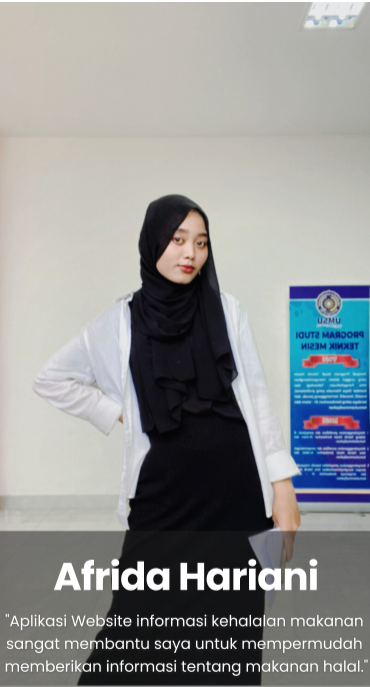

Halal Trace Details

Halal Trace – Website Halal Food Information
View Interactive Prototype
Halal Trace merupakan website informasi makanan halal yang dirancang untuk membantu masyarakat menemukan informasi mengenai makanan, produk, dan restoran halal secara mudah, cepat, dan terpercaya. Project ini dikembangkan sebagai Massive Project pada program Studi Independen dengan fokus pada proses UI/UX Design, mulai dari riset pengguna, analisis kebutuhan, penyusunan user persona, hingga pembuatan prototype menggunakan Figma.
Saya berperan sebagai Hacker dalam tim. Meskipun target project berfokus pada tahap UI/UX Design, saya turut berkontribusi dalam proses pengembangan prototype, memberikan masukan terhadap implementasi antarmuka, serta berkolaborasi dengan anggota tim untuk memastikan solusi yang dirancang dapat diimplementasikan dengan baik pada tahap development.
📌 Problem Statement
Banyak masyarakat Muslim masih mengalami kesulitan dalam memperoleh informasi mengenai makanan halal, terutama ketika berada di daerah dengan keterbatasan akses terhadap informasi kehalalan produk maupun restoran.
Salah satu pengguna yang diwawancarai adalah Afrida Hariani, seorang mahasiswa Universitas Muhammadiyah Sumatera Utara yang gemar berwisata ke berbagai daerah, termasuk Pulau Samosir. Selama perjalanan, ia sering mengalami kesulitan dalam menemukan informasi mengenai makanan halal, memverifikasi status kehalalan suatu produk, serta menemukan restoran halal yang sesuai dengan kebutuhannya. Keterbatasan informasi yang tersedia membuat proses pencarian menjadi kurang efisien dan mengurangi rasa percaya diri saat memilih makanan.
Bagaimana merancang sebuah platform yang mampu menyediakan informasi makanan halal secara lengkap, membantu pengguna memverifikasi status kehalalan produk, serta memudahkan pencarian restoran halal berdasarkan lokasi pengguna?
👤 User Persona

Salah satu persona utama adalah Afrida Hariani, seorang mahasiswa Universitas Muhammadiyah Sumatera Utara yang gemar berwisata ke berbagai daerah, termasuk Pulau Samosir. Saat bepergian, ia sering mengalami kesulitan memperoleh informasi mengenai makanan halal di lokasi yang dikunjungi.
Afrida membutuhkan platform yang memudahkan pencarian makanan halal, membantu memverifikasi status sertifikasi halal suatu produk, serta menyediakan informasi restoran halal berdasarkan lokasi agar dapat memilih makanan dengan lebih aman dan percaya diri.
💡 Big Idea
Halal Trace hadir sebagai platform informasi makanan halal yang membantu masyarakat memperoleh informasi mengenai produk dan restoran halal secara mudah, terpercaya, dan berbasis lokasi. Melalui integrasi informasi kehalalan, sertifikasi halal, pencarian restoran halal, serta berita terbaru mengenai industri halal, platform ini membantu pengguna menjalankan gaya hidup halal dengan lebih nyaman, aman, dan percaya diri.
🎨 Design Process
Seluruh proses perancangan dilakukan menggunakan pendekatan Design Thinking, dimulai dari proses user research, analisis kebutuhan pengguna, penyusunan user persona, pembuatan user flow, wireframe, high-fidelity design, interactive prototype, hingga usability testing menggunakan Maze untuk mengevaluasi pengalaman pengguna sebelum tahap implementasi.
- User Research
- Problem Identification
- User Persona
- User Flow
- Wireframe (Low Fidelity)
- High Fidelity UI Design
- Interactive Prototype
- Usability Testing
🚀 Final Solution
- ⭐ Halal Food Information – Menyediakan informasi lengkap mengenai berbagai produk dan makanan halal sehingga pengguna dapat memperoleh referensi yang terpercaya sebelum melakukan pembelian.
- ⭐ GPS-based Halal Restaurant Finder – Membantu pengguna menemukan restoran halal terdekat berdasarkan lokasi secara cepat dan akurat.
- ⭐ Halal Certification Lookup – Memudahkan pengguna memverifikasi status sertifikasi halal suatu produk maupun restoran melalui informasi yang terpercaya.
- ⭐ Halal News & Events – Menyajikan berita terbaru, edukasi, dan informasi mengenai perkembangan industri halal serta berbagai kegiatan terkait.
- ⭐ Halal Product Reviews – Memberikan ruang bagi pengguna untuk membaca dan membagikan ulasan mengenai produk halal berdasarkan pengalaman mereka.
Halal Trace menghadirkan solusi terpadu yang memudahkan masyarakat dalam memperoleh informasi mengenai makanan halal. Melalui integrasi informasi produk halal, pencarian restoran berbasis lokasi, verifikasi sertifikasi halal, berita terkini, serta ulasan pengguna, platform ini membantu meningkatkan kemudahan akses, kenyamanan, dan kepercayaan pengguna dalam memilih makanan sesuai dengan prinsip gaya hidup halal.
🤝 My Contribution
- ✅ Berkolaborasi dengan tim dalam proses analisis kebutuhan pengguna dan identifikasi permasalahan.
- ✅ Memberikan masukan terhadap penyusunan user flow dan struktur navigasi agar sesuai dengan kebutuhan pengguna.
- ✅ Berkontribusi dalam proses pembuatan wireframe dan pengembangan prototype bersama anggota tim menggunakan Figma.
- ✅ Mendukung proses evaluasi desain berdasarkan hasil usability testing menggunakan Maze untuk meningkatkan pengalaman pengguna.
- ✅ Memberikan perspektif implementasi sebagai hacker sehingga rancangan antarmuka dapat dikembangkan dengan lebih efektif pada tahap development.
- ✅ Berkolaborasi secara aktif dengan seluruh anggota tim selama proses perancangan dan pengembangan project.
🧪 Usability Testing
Pengujian dilakukan menggunakan Maze untuk mengevaluasi apakah rancangan website Halal Trace mampu membantu pengguna dalam mengakses layanan informasi makanan halal secara efektif, efisien, dan mudah digunakan.
Pengujian difokuskan pada beberapa skenario utama, seperti menemukan informasi makanan halal dan non-halal, memverifikasi status sertifikasi halal suatu produk, serta mencari restoran halal berdasarkan lokasi pengguna. Selain itu, evaluasi dilakukan menggunakan metode System Usability Scale (SUS) untuk mengukur tingkat usability website, mengetahui tingkat keberhasilan pengguna dalam menyelesaikan setiap tugas, serta memperoleh masukan yang digunakan sebagai dasar perbaikan desain sebelum tahap implementasi.
📄 Conclusion
Halal Trace menghadirkan solusi digital yang membantu masyarakat memperoleh informasi mengenai makanan halal secara lebih mudah, cepat, dan terpercaya. Melalui fitur pencarian restoran halal berbasis lokasi, informasi produk halal, verifikasi sertifikasi halal, berita terkini, serta ulasan pengguna, platform ini meningkatkan kemudahan akses informasi sekaligus mendukung pengguna dalam menjalankan gaya hidup halal dengan lebih percaya diri.
Dalam project ini, saya berperan sebagai Hacker yang turut berkontribusi pada proses pengembangan UI/UX bersama tim, mulai dari memberikan masukan terhadap rancangan antarmuka, mendukung pengembangan prototype, hingga berpartisipasi dalam evaluasi desain melalui usability testing. Kolaborasi tersebut menghasilkan rancangan website yang berorientasi pada kebutuhan pengguna dan siap untuk diimplementasikan pada tahap pengembangan aplikasi.
Project Information
-
Project
Halal Trace -
Category
UI/UX Design • Website -
Duration
February 2024 – March 2024 -
Role
Hacker -
Project Type
Massive Project -
Team
-
Tools
Figma
Maze.co
Trello
VS Code
GitHub -
Technology
HTML
CSS
JavaScript -
Research Method
User Research
User Persona
User Flow
Wireframe
Prototype
Usability Testing -
Target Users
Muslim Consumers
Muslim Travelers
Local Communities -
My Responsibilities
Requirement Analysis
User Flow Review
Wireframing
Prototype Collaboration
UI/UX Evaluation